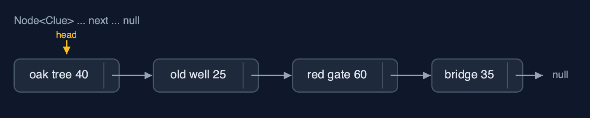
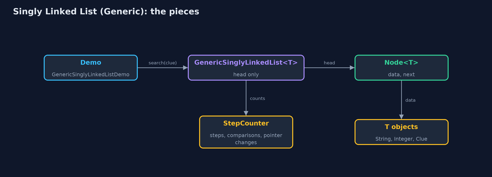
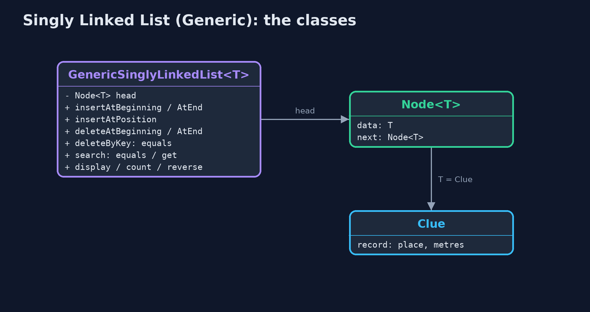
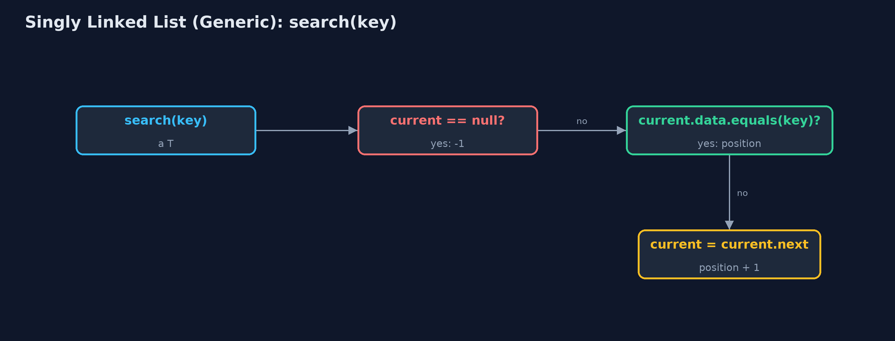
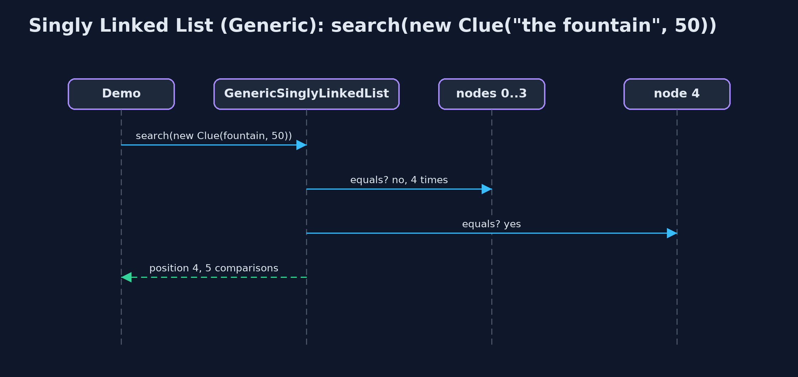

Singly Linked List (Generic)
A generic singly linked list is the singly linked list written once with a type parameter T: each Node<T> holds a reference to a T and a next pointer, nodes are matched with equals, and every operation keeps its cost: O(1) at the beginning, O(n) to reach a position.

GenericSinglyLinkedList<Clue>: each Node<Clue> refers to a Clue and to the next node
A generic singly linked list is the singly-linked-list project written once for any element type. The class is GenericSinglyLinkedList<T> and each node is a Node<T>: its data is a reference to an object of type T, and its next is a pointer to the following Node<T>. The same class holds place names (String), distances (Integer) or clues of our own (Clue), and the compiler refuses anything else. Nodes are matched with **equals**, which compares contents; T needs no ordering, so it may be any type. Every operation and every cost is unchanged: insertion and deletion at the beginning in O(1), reaching a position in O(n).
New to data structures? Read Start here first: it explains memory, references and counting steps in ten minutes.
The everyday idea
Picture the treasure-hunt trail again, but now each signpost holds a slip that says where the prize for this stop is kept, rather than the prize itself, plus the direction to the next signpost. The trail does not care whether the prizes are coins, books or maps: the signposts work the same for all. To ask whether a stop has "the fountain, 50 metres", you compare what the slip describes, not the slip itself.
The worked example: A treasure hunt held as place names, distances and Clue records
The treasure hunt from singly-linked-list, held three ways by one class: the six place names, the distances between clues in metres, and Clue(place, metres) records. The demo counts nodes, searches for a separately made Clue, inserts and deletes by key, deletes at both ends, and reverses the distances and the names with the same code.
Why it exists
Without generics, a list of place names, a list of distances and a list of clues would need three copies of the same linked-list code, or one list of Object that accepts anything and needs a cast on every read. A type parameter gives one class for every type, checked by the compiler. Every later structure in the course that is built from nodes, stacks, queues and trees, is written this way.
New words
| Word | What it means here |
|---|---|
| type parameter T | The element type, filled in at each use: GenericSinglyLinkedList<Clue>. |
| Node<T> | A node whose data is a T and whose next is another Node<T>. |
| reference | What data holds: the address of the object, not a copy of it. |
| equals | How nodes are matched: by contents. A record's equals compares its fields. |
| head, next, null | As in any singly linked list: the first node, the pointer to the following node, and the end. |
What you will see, act by act
Run the demo and it tells the story in 5 acts, printing the real numbers that the tests check:
./gradlew run| Act | What it shows |
|---|---|
| 1. One class, any element type | One class holds the hunt as String place names, Integer distances and Clue records; adding a String to the Integer list does not compile. |
| 2. Node<T>: data is a reference | count() takes 6 steps; each Node<Clue> holds a reference to a Clue and a next pointer, not a copy of the Clue. |
| 3. Search and deletion with equals | A separately made Clue("the fountain", 50) is found at position 4 with 5 equals comparisons, though it is a different object; insertAtPosition changes 2 pointers; deleteByKey finds the red gate in 4 comparisons. |
| 4. Deleting at both ends | deleteAtBeginning changes 1 pointer; deleteAtEnd walks 3 steps; the removed nodes and Clues can be garbage-collected; an empty list is an underflow. |
| 5. The same algorithm for every type | reverse() makes 7 pointer changes on six Integers and on six Strings, with the very same code. |
Each act is drawn step by step in the explained walkthrough and in the animation.
The operations, and what they cost
Time is given for the best, average and worst case in Big-O notation (START-HERE.md explains it by counting steps); the last column is what the demo actually counted, so every formula can be checked against a real number.
| Operation | What it does | Time: best / average / worst | Extra space | Steps counted in the demo |
|---|---|---|---|---|
| Display / count | Follow next pointers from head to null | O(n) / O(n) / O(n) | O(1) | 6 steps for 6 clues |
| Insert at beginning | newNode.next = head; head = newNode | O(1) / O(1) / O(1) | O(1) | 2 pointer changes |
| Insert at end | Walk to the last node, link after it | O(n) / O(n) / O(n) | O(1) | n - 1 steps |
| Insert at position | Walk to prev; newNode.next = prev.next; prev.next = newNode | O(1) at 0 / O(n) / O(n) | O(1) | 2 pointer changes |
| Delete at beginning | head = head.next | O(1) / O(1) / O(1) | O(1) | 1 pointer change |
| Delete at end | Walk to the second-to-last node, set its next to null | O(n) / O(n) / O(n) | O(1) | 3 steps on 5 nodes |
| Delete by key / at position | Walk with prev and current (equals), then prev.next = current.next | O(1) at the head / O(n) / O(n) | O(1) | 4 comparisons, 1 pointer change |
| Search / get | Compare each node's data with equals / follow pos pointers | O(1) / O(n) / O(n) | O(1) | 5 comparisons to find position 4 |
| Reverse | prev, current, next: turn each next pointer around | O(n) / O(n) / O(n) | O(1) | 7 pointer changes on 6 nodes |
Extra space is the memory an operation needs besides the structure itself. A loop needs a fixed amount, O(1); a recursive operation needs one call-stack frame for every call still waiting, so its extra space is the depth of the recursion.
The operations in code
Insertion at the beginning
/** Insertion at the beginning: the new node points to the old head, then becomes the head. O(1). */
public void insertAtBeginning(T data) {
Node<T> newNode = new Node<>(data, null);
newNode.next = head;
steps.pointer();
head = newNode;
steps.pointer();
}Node<T> holds T data and Node<T> next. Unlike an array, a linked list needs no new T[n], so generics fit it with no casts at all: each node is created with new Node<>(data, null), and the two pointer changes are exactly those of the String-only list.
Search with equals
/** Search: the position of the first node holding {@code key}, or -1. O(n). */
public int search(T key) {
Node<T> current = head;
int pos = 0;
while (current != null) {
steps.compare();
if (current.data.equals(key)) {
return pos;
}
current = current.next;
steps.step();
pos++;
}
return -1;
}current.data.equals(key) compares contents, so a separately made Clue("the fountain", 50) is found. current.data == key would compare references and miss it.
Deletion by key
/**
* Deletion by key: the first node holding {@code key}. Keeps a {@code prev} pointer one node
* behind {@code current}, because the node before the deleted one must be changed. O(n).
*
* @return true if a node was deleted
*/
public boolean deleteByKey(T key) {
Node<T> prev = null;
Node<T> current = head;
while (current != null) {
steps.compare();
if (current.data.equals(key)) {
if (prev == null) {
head = current.next; // deleting the head
} else {
prev.next = current.next; // point past the deleted node
}
steps.pointer();
return true;
}
prev = current;
current = current.next;
steps.step();
}
return false;
}The same prev and current walk as the plain list, matching with equals. Once prev.next points past the node, nothing refers to it, and the garbage collector frees both the node and, if nothing else refers to it, its data.
Compared with related structures
The generic singly linked list against its neighbours (n nodes):
| Property | Generic singly list | Singly list of String | Generic dynamic array |
|---|---|---|---|
| Element types | any T | String only | any T |
| Access position i | O(n) | O(n) | O(1) |
| Insert / delete at the beginning | O(1) | O(1) | O(n) shifts |
| Insert at the end | O(n) (O(1) with a tail) | O(n) (O(1) with a tail) | O(1) amortised |
| Matches elements with | equals | equals | equals |
| Needs a cast inside | no: nodes are created as Node<T> | no | yes: (T[]) new Object[n] |
| Java's own | LinkedList<E> (doubly linked) | ArrayList<E> |
The code
src/main/java/com/jk/explore/singlylinkedlistgeneric/
├── Clue.java One clue of the treasure hunt: a type of our own, to show that the generic list holds any type
├── GenericSinglyLinkedList.java A generic singly linked list: nodes holding data of any type {@code T}, joined by next pointers, and a pointer to the first node, the head
├── GenericSinglyLinkedListDemo.java Tells the story of the generic singly linked list in five acts, printing the real step counts
├── Lines.java The demo's printed lines, kept in one {@code StringBuilder} so the tests can check them
├── Node.java A node of a generic singly linked list: the data it holds, of any type {@code T}, and a pointer to the next node
└── StepCounter.java Counts what a linked-list operation costs: traversal steps (following one next pointer), comparisons (checking one node's data against a key), and pointer changes (setting one pointer)Test
./gradlew test24 tests in DemoRunsTest, GenericSinglyLinkedListTest. Every number the demo prints is asserted, and nothing depends on the clock, so every run gives the same result.
Common mistakes
| The mistake | What goes wrong | The fix |
|---|---|---|
Matching with == | A separately made but equal object is not found. | Use equals; for your own types, a record or a correct equals method. |
A raw Node or raw list | The compiler stops checking the element type. | Always write Node<T> and GenericSinglyLinkedList<Clue>. |
| Setting the two insertion pointers in the wrong order | As in any singly list, the rest of the list is lost. | newNode.next = prev.next first, then prev.next = newNode. |
| Changing an object after inserting it | The list holds a reference, so the change is seen through the list too; and a search for the old values fails. | Store immutable objects, such as records, or remember that the list shares them. |
Try it yourself
- Easy. Write
boolean contains(T key)usingsearch. What doescontains(new Clue("the bridge", 35))return on the demo's clues, and why? - Medium. Write
int totalMetres(GenericSinglyLinkedList<Clue> clues), outside the list class, using onlycount()andget(i). What is its time complexity, and how would a method inside the class do better? - Harder. Write a generic static method
<T> GenericSinglyLinkedList<T> copyOf(GenericSinglyLinkedList<T> list)that makes a new list with the same elements in the same order in O(n). Are the elements copied?
The answers are in docs/exercises.md, below the questions, so they are not given away.
When to use it
- A linked list of objects of one type, when inserting and deleting at the beginning is common.
- The building block for generic stacks and queues.
When not to
- Reading by position: use an array or
ArrayList<E>. - Deleting at the end or walking backwards often: use a doubly linked list.
Where you have already met this
java.util.LinkedList<E>and every other generic collection.Node<T>in almost every textbook's generic list, stack and queue.
Technologies and versions
| Technology | Version | Used for |
|---|---|---|
| Java | 25 | the code (toolchain set in build.gradle; Gradle fetches JDK 25 if it is missing) |
| Gradle | 9.8.0 (wrapper) | build and run, nothing to install |
| JUnit | 6.1.3 | the tests |
| videokit | course tool | the narrated video and animation: Piper en_US-amy-medium, speed 0.8, longer pauses (the amy-slow voice) |
Learning material
| Document | What it is for |
|---|---|
| Start here | the ideas every project relies on |
| Problem statement | the situation and what the project must show |
| Prerequisites | what you need to know first |
| Singly Linked List (Generic), explained | every act, picture by picture |
| Animated walkthrough | the structure changing step by step, narrated |
| Cheat sheet | the whole structure on one page |
| Exercises and answers | practice, easy to harder |
| Session guide | a one-hour lesson |
| Specification | what this project must be true of |
How the pieces fit
One generic class; each Node<T> refers to its data object and to the next node.

The classes
GenericSinglyLinkedList<T> holds head; each Node<T> holds data and next; Clue is one T.

How the data moves
Walk from head, matching with equals.

Who calls whom, in order
Five equals calls; the fifth node's Clue is equal, though not the same object.

Video
video/singly-linked-list-generic-explained.mp4 (with .m4a audio and .srt subtitles) is built by video/build_video.sh. Rendered media is not committed.
Where this sits
Part of the data structures course, in arrays-and-lists.